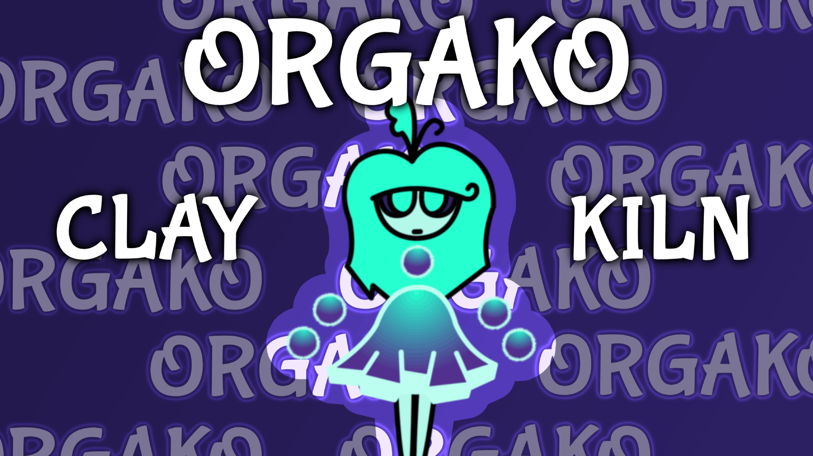

Programming
These websites display my programming abilities in HTML, CSS, JavaScript, and even GameMaker Language.
American Studies - Bicolage

I created this website along with 3 other people in order to tell our classmates about the history of Seneca Village.
Physics: Mechanics - boxPush

I created a game using GameMaker Studio for my final project in my physics class. Two opponents push a box into their goals.
Personal - LBALdle

This is a passion project based on Wordle, the popular word guessing game, and Luck Be a Landlord, one of my favorite video games. You will be able to guess a Luck Be a Landlord symbol based on clues.
Animation
My animations are based around the game My Singing Monsters, where various creatures use music to tell a story. I upload my animation projects to my YouTube channel, which has over 12,000 subscribers.
Black Cat Island

Black Cat Island is the first animated island I have ever created, and thus, it holds a special place in my heart. Most of the monsters are based on cats.
Grunge Glitch Island

Grunge Glitch Island is the direct sequel to Black Cat Island.
Signal Stadium

I started Signal Stadium around a year after my old laptop crashed and I lost all of my intricate animation projects, including Black Cat and Grunge Glitch Island. This island helped me to get back into the flow of music and animation.
Clay Kiln (Upcoming)
Clay Kiln will be the direct sequel to Signal Stadium.